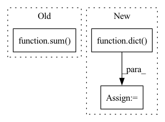

Pattern ID :24024
Before Change
self.block_aggs = nn.ModuleList([])
drop_path_rates = [x.item() for x in torch.linspace(0, drop_path_rate, sum(depths))]
for lix in range(self.num_levels):
dpr = drop_path_rates[sum( depths[:lix]) :sum(depths[:lix+1])]
self.levels.append(NestLevel(
self.num_blocks[lix], self.block_size, self.seq_length, num_heads[lix], depths[lix],
embed_dims[lix], mlp_ratio, qkv_bias, drop_rate, attn_drop_rate, dpr, norm_layer,After Change
levels.append(NestLevel(
self.num_blocks[i], self.block_size, self.seq_length, num_heads[i], depths[i], dim, prev_dim,
mlp_ratio, qkv_bias, drop_rate, attn_drop_rate, dp_rates[i], norm_layer, act_layer, pad_type=pad_type))
self.feature_info += [dict(num_chs=dim, reduction=curr_stride, module=f"levels.{i}") ]
prev_dim = dim
curr_stride *= 2
self.levels = nn.Sequential(*levels)In pattern: SUPERPATTERN
Frequency: 3
Non-data size: 3
Instances Fragment ID: 74621346
Project Name: feng-lab/pytorch-image-models
Commit Name: 81cd6863c8c9515de8884e8a8ea0445ec08b4486
Time: 2021-07-05
Author: rwightman@gmail.com
File Name: timm/models/nest.py
M Class Name: Nest
N Class Name: Nest
M Method Name: __init__(19)
N Method Name: __init__(19)
M Parent Class: nn.Module
N Parent Class: nn.Module
M File Name: timm/models/nest.py
N File Name: timm/models/nest.py
M Start Line: 216
M End Line: 301
N Start Line: 220
N End Line: 300
Before Change
lst = [lst[idx:idxs_bar_start[i+1]] for i, idx in enumerate(idxs_bar_start[:-1])] + \
[lst[idxs_bar_start[-1]:]]
assert all((len(bar) > 1) for bar in lst), "Bar should contain at least one note"
lst = [sum( [MusicConverter.note_elm2m21(n) for n in notes[1:]], start=[]) for notes in lst]
time_sig = f"{e1.meta[0]}/{e1.meta[1]}"
return make_score(title=title, mode=mode, time_sig=time_sig, tempo=e2.meta, lst_note=lst)
After Change
if self.mode == "melody":
d_notes = dict(melody=[MusicConverter.bar2notes(notes) for notes in lst])
else: // `full`
d_notes = dict(melody=[], bass=[])
for notes in lst:
d = MusicConverter.split_notes(notes)
d_notes["melody"].append(MusicConverter.bar2notes(d["melody"]))
d_notes["bass"].append(MusicConverter.bar2notes(d["bass"])) Fragment ID: 74621347
Project Name: stefanheng/symbolic-music-generation
Commit Name: 2e16f2a50b917d97c60ccc576c0859db80ea7711
Time: 2022-08-10
Author: stefan.hg@outlook.com
File Name: musicnlp/postprocess/music_converter.py
M Class Name: MusicConverter
N Class Name: MusicConverter
M Method Name: str2score(4)
N Method Name: str2score(5)
M Parent Class:
N Parent Class:
M File Name: musicnlp/postprocess/music_converter.py
N File Name: musicnlp/postprocess/music_converter.py
M Start Line: 170
M End Line: 195
N Start Line: 271
N End Line: 282
Before Change
// batch mean losses
fin_stitch_losses = sum( stitch_losses) / len(stitch_losses)
return fin_stitch_losses
After Change
// final sum
fin_stitch_losses = similarity_loss + non_zero_loss + total_neg_loss + free_edges_loss
stitch_loss_dict = dict(
stitch_similarity_loss=similarity_loss,
stitch_non_zero_loss=non_zero_loss,
stitch_neg_loss=total_neg_loss,
free_edges_loss=free_edges_loss
)
return fin_stitch_losses, stitch_loss_dict
def free_edges(self, stitch_tags, gt_free_mask): Fragment ID: 74621344
Project Name: maria-korosteleva/garment-pattern-estimation
Commit Name: 0e217787b4fe153fe6604429982525be356096d0
Time: 2020-11-03
Author: mariako@kaist.ac.kr
File Name: nn/metrics.py
M Class Name: PatternStitchLoss
N Class Name: PatternStitchLoss
M Method Name: __call__(4)
N Method Name: __call__(3)
M Parent Class:
N Parent Class:
M File Name: nn/metrics.py
N File Name: nn/metrics.py
M Start Line: 90
M End Line: 159
N Start Line: 84
N End Line: 145